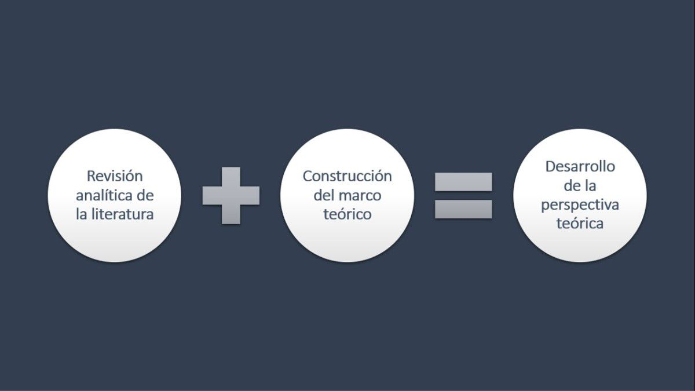

>
=
Menu
Tema Principal
Subtema 1
Subtema 2
Subtema 3
Subtema 4
DESAROLLO DE LA PERSPECTIVA TEORICA
¿Qué etapas comprende el desarrollo de la perspectiva teórica?
Tal desarrollo usualmente comprende dos etapas:
・La revisión analítica de la literatura correspondiente.
・La construcción del marco teórico, lo que puede implicar la adopción de una teoría.

Siguiente